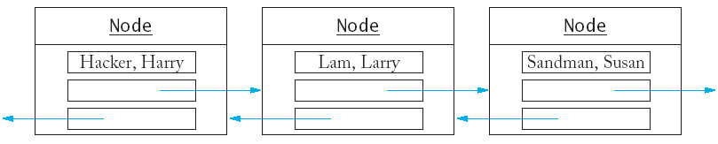

<!DOCTYPE HTML PUBLIC "-//W3C//DTD HTML 4.01 Transitional//EN">
<html>
<head>
  <meta http-equiv="content-type"
 content="text/html; charset=ISO-8859-1">
  <font>
  <title>An Introduction to Data Structures</title>
  <meta http-equiv="Content-Type"
 content="text/html; charset=ISO-8859-1">
  </font>
</head>
<body style="color: rgb(0, 0, 0); background-color: rgb(255, 255, 255);">
<h2>Chapter 16: An Introduction to Data Structures - I</h2>
<h2>Lecture Goals</h2>
<ul>
  <li><font size="+1">To be able to write programs with standard lists
and iterators</font></li>
  <li><font size="+1">To understand the advantages and disadvantages of
the list data structure</font></li>
  <li><font size="+1">To learn about stacks and queues</font></li>
</ul>
<h2>Linked Lists</h2>
<ul>
  <li><font size="+1">Suppose you are maintaining <span
 style="font-style: italic;">a vector </span>of sorted
objects (such as employees)</font>
    <ul>
      <li><font size="+1">Many elements will need to be shifted back if
an new object is inserted in the middle.</font></li>
      <li><font size="+1">Many elements will need to be shifted forward
if an object is deleted from the middle.</font></li>
    </ul>
  </li>
  <li><font size="+1">Moving a large number of records can involve a
substantial amount of computer time - <span style="font-style: italic;">O</span>(<span
 style="font-style: italic;">n</span>) time.</font></li>
  <li><font size="+1">Rather than store a sequence of values in one
long block of memory (like a vector or an array) <span
 style="font-style: italic;">a linked list</span> stores
each value in its own memory block, together with the locations of the
neighboring blocks in the sequence.</font></li>
</ul>
<blockquote>
  <p></p>
</blockquote>
<ul>
  <li><font size="+1">Inserting an element into a list now requires no
shifting, merely reassigning new locations to adjacent objects - <span
 style="font-style: italic;">O</span>(1) time.</font></li>
</ul>
<blockquote></blockquote>
<ul>
  <li><font size="+1">Removing an element from the list doesn't require
shifts either - <span style="font-style: italic;">O</span>(1) time.<br>
    </font></li>
</ul>
<blockquote></blockquote>
<ul>
  <li><font size="+1">The standard C++ library has an implementation of
the linked list structure.</font>
    <ul>
      <li><font size="+1">First we will learn how to use the standard
list.</font> </li>
      <li><font size="+1">Later we will find out how to implement lists.</font></li>
    </ul>
  </li>
  <li><font size="+1"><span style="font-style: italic;">Doubly linked
lists</span> (as shown in the
illustrations) have links going in both directions.</font></li>
  <li><font size="+1"><span style="font-style: italic;">Singly linked
lists</span> only link elements in one
direction.</font> </li>
</ul>
<ul>
  <li><font size="+1">Just like the vector, the standard list is a
template.</font></li>
  <li><font size="+1">You can use <tt>push_back</tt> to add elements
to the list.
    <blockquote>
      <pre><span style="color: rgb(255, 0, 0); font-weight: bold;">list</span>&lt;<span
 style="color: rgb(255, 0, 0); font-weight: bold;">string</span>&gt; staff;<br><br>staff.<span
 style="color: rgb(255, 0, 0);">push_back</span>("Cracker, Carl");<br>staff.<span
 style="color: rgb(255, 0, 0);">push_back</span>("Hacker, Harry");<br>staff.<span
 style="color: rgb(255, 0, 0);">push_back</span>("Lam, Larry");<br>staff.<span
 style="color: rgb(255, 0, 0);">push_back</span>("Sandman, Susan");</pre>
    </blockquote>
    </font></li>
  <li><font size="+1">You <span style="font-style: italic;">cannot</span>
directly access elements using
subscript access (e.g. <tt>staff[3]</tt>) - the values are not stored
in one contiguous block in memory and there is no fast way to access
them.<br>
    </font></li>
  <li><font size="+1">Instead you must start at the beginning of the
list, and visit each element in turn using a <i>list</i> <i>iterator</i>.
An
iterator
marks
a


    <span style="font-style: italic;">position</span>
in the list.
    <blockquote>
      <pre><span style="color: rgb(255, 0, 0); font-weight: bold;">list</span>&lt;<span
 style="font-weight: bold; color: rgb(255, 0, 0);">string</span>&gt;::<span
 style="color: rgb(255, 0, 0); font-weight: bold;">iterator</span> pos;<br>pos = staff.<span
 style="color: rgb(255, 0, 0);">begin</span>();<br></pre>
    </blockquote>
    </font> </li>
</ul>
<ul>
  <li><font size="+1">To move an iterator forward in the list, use the <tt>++</tt>
operator.
    <blockquote>
      <pre>pos<span style="color: rgb(255, 0, 0);">++</span>;</pre>
    </blockquote>
    </font></li>
  <li><font size="+1">To move an iterator backward in the list, use the
    <tt>--</tt> operator.
    <blockquote>
      <pre>pos<span style="color: rgb(255, 0, 0);">--</span>;</pre>
    </blockquote>
    </font></li>
  <li><font size="+1">You can find the value that is stored in the
position with the <tt>*</tt> operator.
    <blockquote>
      <pre><span style="font-weight: bold; color: rgb(255, 0, 0);">string</span> value = <span
 style="color: rgb(255, 0, 0);">*</span>pos;</pre>
    </blockquote>
    </font></li>
  <li><font size="+1">The value <tt>*pos</tt> represent the value that
is stored in the list.
    <blockquote>
      <pre><span style="color: rgb(255, 0, 0);">*</span>pos = "Van Dyck, Vicki"; // assign a value<br> pos = staff.<span
 style="color: rgb(255, 0, 0);">begin</span>(); // assign a position   </pre>
    </blockquote>
    </font></li>
  <li><font size="+1">To insert another string <span
 style="font-style: italic;">before</span> the iterator
position, use the <tt>insert</tt> function.
    <blockquote>
      <pre>staff.<span style="color: rgb(255, 0, 0);">insert</span>(pos, "Reindeer, Rudolph");</pre>
    </blockquote>
    </font></li>
</ul>
<ul>
  <li><font size="+1">Each list has an end position that does not
correspond to any value in the list but that points past the list's
end.
    <blockquote>
      <pre>pos = staff.<span style="color: rgb(255, 0, 0);">end</span>(); /* points past the end of the list */<br>staff.<span
 style="color: rgb(255, 0, 0);">insert</span>(pos, "Yaglov, Yvonne");<br>   /* insert past the end of list */</pre>
    </blockquote>
    </font></li>
  <li><font size="+1">The end position does not point to any value, so
you cannot look up the value at that position.
    <blockquote>
      <pre><span style="font-weight: bold; color: rgb(255, 0, 0);">string</span> value = <span
 style="color: rgb(255, 0, 0);">*</span>(staff.<span
 style="color: rgb(255, 0, 0);">end</span>()); /* <span
 style="font-weight: bold; color: rgb(255, 0, 0);">ERROR</span> */</pre>
    </blockquote>
    </font></li>
  <li><font size="+1">Compare to accessing <tt>s[10]</tt> in a vector
with 10 elements.</font></li>
</ul>
<ul>
  <li><font size="+1">The end position is useful for stopping a
traversal of the list.
    <blockquote>
      <pre>pos = staff.<span style="color: rgb(255, 0, 0);">begin</span>();<br>while (pos <span
 style="color: rgb(255, 0, 0);">!=</span> staff.<span
 style="color: rgb(255, 0, 0);">end</span>())<br>{  cout &lt;&lt; <span
 style="color: rgb(255, 0, 0);">*</span>pos &lt;&lt; "\n";<br>   pos<span
 style="color: rgb(255, 0, 0);">++</span>;<br>}</pre>
    </blockquote>
    </font></li>
  <li><font size="+1">The traversal can be described more concisely
with a <tt>for</tt> loop:
    <blockquote>
      <pre>for (pos = staff.<span style="color: rgb(255, 0, 0);">begin</span>(); pos <span
 style="color: rgb(255, 0, 0);">!=</span> staff.<span
 style="color: rgb(255, 0, 0);">end</span>(); pos<span
 style="color: rgb(255, 0, 0);">++</span>)<br>   cout &lt;&lt; <span
 style="color: rgb(255, 0, 0);">*</span>pos &lt;&lt; "\n";</pre>
    </blockquote>
    </font></li>
  <li><font size="+1">Compare this to a traversal of a vector.
    <blockquote>
      <pre>for (i = 0; i &lt; s.<span style="color: rgb(255, 0, 0);">size</span>(); i++)<br>   cout &lt;&lt; s[i] &lt;&lt; "\n";</pre>
    </blockquote>
    </font></li>
  <li><font size="+1">To remove an element from a list, you move an
iterator to the position you want to remove, then call the erase
function.
    <blockquote>
      <pre>pos = staff.<span style="color: rgb(255, 0, 0);">begin</span>();<br>pos<span
 style="color: rgb(255, 0, 0);">++</span>;<br>staff.<span
 style="color: rgb(255, 0, 0);">erase</span>(pos);</pre>
    </blockquote>
    </font></li>
</ul>
<h2>Linked Lists(<a href="../../sources/ch16/list1.cpp"><tt>list1.cpp</tt></a>)</h2>
<iframe src="code/list1.cpp.html" width="80%" height="80%">Your browser
does not support the
&amp;amp;amp;amp;amp;amp;amp;amp;amp;amp;amp;amp;amp;amp;amp;amp;amp;lt;iframe&amp;amp;amp;amp;amp;amp;amp;amp;amp;amp;amp;amp;amp;amp;amp;amp;amp;gt;
tag.</iframe>
<hr style="width: 100%; height: 2px;">
<h2>Stacks and Queues</h2>
<ul>
  <li><font size="+1">Stacks and queues are special data types that
allow insertion and remove of items at the <span
 style="font-style: italic;">ends</span> only, not in the
middle. </font></li>
  <li><font size="+1">A <i>stack</i> lets you insert and remove
elements at <span style="font-style: italic;">one end</span> only,
traditionally called the <i>top</i> of the
stack.</font></li>
  <li><font size="+1">To visualize a stack, think of a stack of books.</font></li>
  <li><font size="+1">Since items can only be added or removed from the
top of the stack, they are removed in the order that is opposite from
the order they were added.</font></li>
  <li><font size="+1">This is called <i>last in</i>, <i>first out </i>or


    <i>LIFO</i> order.</font></li>
  <li><font size="+1">The addition and removal operations are called <tt>push</tt>
and <tt>pop</tt>. </font></li>
</ul>
<ul>
  <li><font size="+1">The </font><font size="+1"><tt>stack </tt></font><font
 size="+1">is a template in the standard
C++ library.
    <blockquote>
      <pre><span style="color: rgb(255, 0, 0); font-weight: bold;">stack</span>&lt;<span
 style="font-weight: bold; color: rgb(255, 0, 0);">string</span>&gt; s;<br>s.<span
 style="color: rgb(255, 0, 0);">push</span>("Tom");<br>s.<span
 style="color: rgb(255, 0, 0);">push</span>("Dick");<br>s.<span
 style="color: rgb(255, 0, 0);">push</span>("Harry");<br><span
 style="color: rgb(51, 51, 255); font-weight: bold;">while</span> (s.<span
 style="color: rgb(255, 0, 0);">size</span>() &gt; 0)<br>{  cout &lt;&lt; s.<span
 style="color: rgb(255, 0, 0);">top</span>() &lt;&lt; "\n";<br>   s.<span
 style="color: rgb(255, 0, 0);">pop</span>();<br>}</pre>
    </blockquote>
    </font></li>
</ul>
<ul>
  <li><font size="+1">A <span style="font-style: italic;">queue</span>
is similar to a stack, except that you
add items to <span style="font-style: italic;">one end</span> of the
queue (the <i>back</i>) and remove them
from the <span style="font-style: italic;">other end</span> of the
queue (the <i>front</i>). </font></li>
  <li><font size="+1">To visualize a queue, think of people lining up. </font></li>
  <li><font size="+1">Queues store items in a <i>first</i> <i>in</i>,
    <i>first</i> <i>out</i> or <i>FIFO</i> fashion. </font></li>
  <li><font size="+1">The standard </font><font size="+1"><span
 style="font-family: monospace;">queue</span></font><font size="+1">
template implements a queue in
C++.
    <blockquote>
      <pre><span style="font-weight: bold; color: rgb(255, 0, 0);">queue</span>&lt;<span
 style="color: rgb(255, 0, 0); font-weight: bold;">string</span>&gt; q;<br>q.<span
 style="color: rgb(255, 0, 0);">push</span>("Tom");<br>q.<span
 style="color: rgb(255, 0, 0);">push</span>("Dick");<br>q.<span
 style="color: rgb(255, 0, 0);">push</span>("Harry");<br><span
 style="color: rgb(51, 102, 255); font-weight: bold;">while</span> (q.<span
 style="color: rgb(255, 0, 0);">size</span>() &gt; 0)<br>{  cout &lt;&lt; q.<span
 style="color: rgb(255, 0, 0);">front</span>() &lt;&lt; "\n";<br>   q.<span
 style="color: rgb(255, 0, 0);">pop</span>();<br>}</pre>
    </blockquote>
    </font></li>
</ul>
<h2>Stacks and Queues (<a href="../../sources/ch16/fifolifo.cpp"><tt>fifolifo.cpp</tt></a>)</h2>
<iframe src="code/fifolifo.cpp.html" width="80%" height="80%">Your
browser does not support the
&amp;amp;amp;amp;amp;amp;amp;amp;amp;amp;amp;amp;amp;amp;amp;amp;amp;lt;iframe&amp;amp;amp;amp;amp;amp;amp;amp;amp;amp;amp;amp;amp;amp;amp;amp;amp;gt;
tag.</iframe><br>
<br>
<span class="Apple-style-span"
 style="border-collapse: separate; color: rgb(0, 0, 0); font-family: 'Times New Roman'; font-style: normal; font-variant: normal; font-weight: normal; letter-spacing: normal; line-height: normal; orphans: 2; text-indent: 0px; text-transform: none; white-space: normal; widows: 2; word-spacing: 0px; font-size: medium;"></span>
<hr style="width: 100%; height: 2px;"><span class="Apple-style-span"
 style="border-collapse: separate; color: rgb(0, 0, 0); font-family: 'Times New Roman'; font-style: normal; font-variant: normal; font-weight: normal; letter-spacing: normal; line-height: normal; orphans: 2; text-indent: 0px; text-transform: none; white-space: normal; widows: 2; word-spacing: 0px; font-size: medium;">
<h2>Other Standard Containers</h2>
<ul>
  <li><font size="+1">The standard library contains several other
useful containers.</font></li>
  <li><font size="+1">The<span class="Apple-converted-space">&nbsp;</span><tt>set</tt><span
 class="Apple-converted-space">&nbsp;</span>always keeps its elements
in order, no matter in which order you insert them.
    <blockquote>
      <pre>set&lt;string&gt; s;<br><br>s.insert("Tom");<br>s.insert("Dick");<br>s.insert("Harry");<br><br>set&lt;string&gt;::iterator p;<br>for (p = s.begin(); p!= s.end(); p++)<br>   cout &lt;&lt; *p &lt;&lt; "\n";</pre>
    </blockquote>
    </font></li>
  <li><font size="+1">The above code displays the strings in sorted
order: Dick, Harry, Tom.</font></li>
  <li><font size="+1">The<span class="Apple-converted-space">&nbsp;</span><tt>set</tt><span
 class="Apple-converted-space">&nbsp;</span>data structure keeps the
values in a special tree shaped structure; each time an element is
inserted, the tree is reorganized.</font></li>
</ul>
<ul>
  <li><font size="+1">The C++<span class="Apple-converted-space">&nbsp;</span><tt>set</tt><span
 class="Apple-converted-space">&nbsp;</span>ignore duplicates; if you
insert an element into the set that is already present, the insertion
has no effect.</font></li>
  <li><font size="+1">The<span class="Apple-converted-space">&nbsp;</span><tt>count</tt><span
 class="Apple-converted-space">&nbsp;</span>function returns the number
of times that an element is contained in a set (should always be 1).
    <blockquote>
      <pre>set&lt;string&gt; s;<br><br>s.insert("Tom");<br>s.insert("Tom");<br>cout &lt;&lt; s.count("Tom") &lt;&lt; "\n"; /* displays 1 */</pre>
    </blockquote>
    </font></li>
  <li><font size="+1">If you want to be able to keep track of multiple
occurrences of identical values, use a<span
 class="Apple-converted-space">&nbsp;</span><tt>multiset</tt><span
 class="Apple-converted-space">&nbsp;</span>instead.</font></li>
  <li><font size="+1">The<span class="Apple-converted-space">&nbsp;</span><tt>count</tt><span
 class="Apple-converted-space">&nbsp;</span>function works for
multiset, with expected results.
    <blockquote>
      <pre>multiset&lt;string&gt; m;<br><br>m.insert("Tom");<br>m.insert("Tom");<br>cout &lt;&lt; m.count("Tom") &lt;&lt; "\n"; /* displays 2 */</pre>
    </blockquote>
    </font></li>
</ul>
</span><span class="Apple-style-span"
 style="border-collapse: separate; color: rgb(0, 0, 0); font-family: 'Times New Roman'; font-style: normal; font-variant: normal; font-weight: normal; letter-spacing: normal; line-height: normal; orphans: 2; text-indent: 0px; text-transform: none; white-space: normal; widows: 2; word-spacing: 0px; font-size: medium;">
<ul>
  <li><a href="../../sources/ch16/set.cpp"><big><span
 style="font-family: monospace;">set.cpp</span></big></a><br>
  </li>
  <li><font size="+1">A<span class="Apple-converted-space">&nbsp;</span><i>map</i><span
 class="Apple-converted-space">&nbsp;</span>is similar to a<span
 class="Apple-converted-space">&nbsp;</span><tt>vector</tt>, but you
can use another data type for the indices.
    <blockquote>
      <pre>map&lt;string, double&gt; scores;<br>scores["Tom"] = 90;<br>scores["Dick"] = 86;<br>scores["Harry"] = 100;</pre>
    </blockquote>
    </font></li>
  <li><font size="+1"><span style="font-style: italic;">Multimaps</span>
are a kind of associative container that stores elements formed by the
combination of a <span style="font-style: italic;">key value</span>
and a <span style="font-style: italic;">mapped value</span>, much like
    </font><font size="+1"><span style="font-family: monospace;">map</span></font><font
 size="+1"> containers, but allowing different elements to have the
same key value.
    <blockquote>
      <pre>multimap&lt;string, double&gt; mmap;<br>mmap.insert(pair<string,
 int="">("Tom", 90));<br>mmap.insert(pair<string, int="">("Dick", 86));<br>mmap.insert(pair<string,
 int="">("Harry", 100));<br>mmap.insert(pair<string, int="">("Tom", 190));</string,></string,></string,></string,></pre>
    </blockquote>
    </font></li>
  <li><span class="Apple-style-span"
 style="border-collapse: separate; color: rgb(0, 0, 0); font-family: 'Times New Roman'; font-style: normal; font-variant: normal; font-weight: normal; letter-spacing: normal; line-height: normal; orphans: 2; text-indent: 0px; text-transform: none; white-space: normal; widows: 2; word-spacing: 0px; font-size: medium;"></span><font
 style="font-family: monospace;"><a href="../../sources/ch16/map.cpp"><font
 size="+1">map.cpp</font></a></font></li>
</ul>
</span><span class="Apple-style-span"
 style="border-collapse: separate; color: rgb(0, 0, 0); font-family: 'Times New Roman'; font-style: normal; font-variant: normal; font-weight: normal; letter-spacing: normal; line-height: normal; orphans: 2; text-indent: 0px; text-transform: none; white-space: normal; widows: 2; word-spacing: 0px; font-size: medium;">
<h2>Standard Algorithms</h2>
<ul>
  <li><font size="+1">Why iterators?</font></li>
  <li><font size="+1">It is possible to supply<span
 class="Apple-converted-space">&nbsp;</span><i>generic functions</i><span
 class="Apple-converted-space">&nbsp;</span>that can carry out a task
with the elements in any container that uses iterators.</font></li>
  <li><font size="+1">Example: The accumulate function can compute the
sum of all elements in a vector or a list.
    <blockquote>
      <pre>vector&lt;double&gt; data;<br>/* do something with data */<br><br>double vsum = 0;<br>accumulate(data.begin, data.end(), vsum);<br>/* now vsum contains the sum of the elements in the vector */<br>list&lt;double&gt; salaries;<br>/* do something with salaries */<br><br>double lsum = 0;<br>accumulate(salaries.begin(), salaries.end(), lsum);<br>/* now lsum contains the sum of the elements in the list */</pre>
    </blockquote>
    </font></li>
</ul>
<ul>
  <li><font size="+1">The standard library also supplies a find
algorithm.</font></li>
  <li><font size="+1">The find algorithm returns the second iterator if
the search fails.
    <blockquote>
      <pre>/* search for a certain name on the staff */<br>list&lt;string&gt;::iterator it =<br>   find(staff.begin(), staff.end(), name);</pre>
    </blockquote>
    </font></li>
  <li><font size="+1">The first two parameters can be other iterators
for the list (if you don't want to search the entire list).</font></li>
</ul>
<ul>
  <li><font size="+1">The standard library provides a wealth of
ready-to-use and fully debugged data structures and algorithms.</font>
    <ul>
      <li><font size="+1"><tt>for_each</tt><span
 class="Apple-converted-space">&nbsp;</span>applies a function to each
element</font></li>
      <li><font size="+1"><tt>find</tt><span
 class="Apple-converted-space">&nbsp;</span>(as above)</font></li>
      <li><font size="+1"><tt>find_if</tt><span
 class="Apple-converted-space">&nbsp;</span>locates the first element
fulfilling a condition</font></li>
      <li><font size="+1"><tt>count</tt><span
 class="Apple-converted-space">&nbsp;</span>(as above)</font></li>
      <li><font size="+1"><tt>equal</tt><span
 class="Apple-converted-space">&nbsp;</span>tests if containers have
the same elements in the same order</font></li>
      <li><font size="+1"><tt>replace</tt>/<tt>replace_if</tt><span
 class="Apple-converted-space">&nbsp;</span>replace all matching
elements with a new one</font></li>
      <li><font size="+1"><tt>unique</tt><span
 class="Apple-converted-space">&nbsp;</span>remove adjacent identical
values</font></li>
      <li><font size="+1"><tt>min_element</tt>,<span
 class="Apple-converted-space">&nbsp;</span><tt>max_element</tt><span
 class="Apple-converted-space">&nbsp;</span>finds the smallest and
largest elements</font></li>
      <li><font size="+1"><tt>next_permutation</tt><span
 class="Apple-converted-space">&nbsp;</span>rearranges the elements;
call it<span class="Apple-converted-space">&nbsp;</span><i>n</i>! times
iterates through all permutations</font></li>
      <li><font size="+1"><tt>sort</tt><span
 class="Apple-converted-space">&nbsp;</span>sorts the elements;<span
 class="Apple-converted-space">&nbsp;</span><tt>stable_sort</tt><span
 class="Apple-converted-space">&nbsp;</span>performs better if the
container is already almost sorted</font></li>
      <li><font size="+1"><tt>random_shuffle</tt><span
 class="Apple-converted-space">&nbsp;</span>randomly rearranges the
elements</font></li>
      <li><font size="+1"><tt>nth_element</tt><span
 class="Apple-converted-space">&nbsp;</span>find the<span
 class="Apple-converted-space">&nbsp;</span><i>n</i>th element without
sorting the container.</font></li>
      <li><font size="+1">plus many more...</font></li>
    </ul>
  </li>
  <li><font size="+1">Before writing a lot of code from scratch, check
whether the standard library already has what you need.</font></li>
</ul>
</span>
<hr style="width: 100%; height: 2px;">
</body>
</html>
